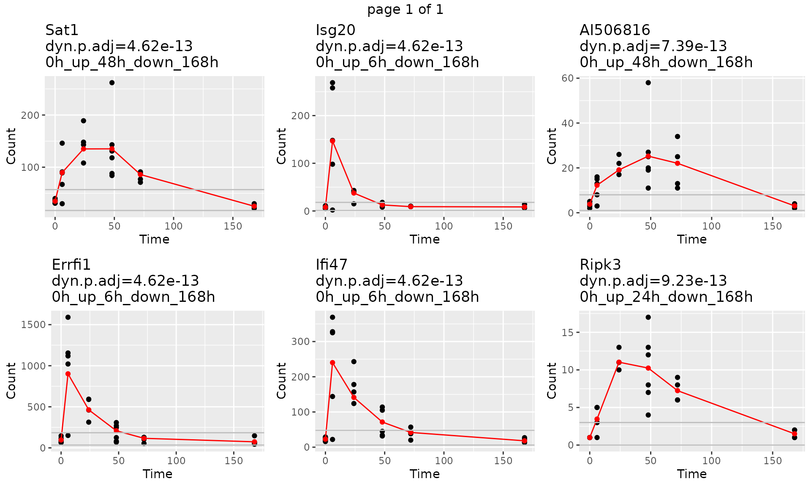
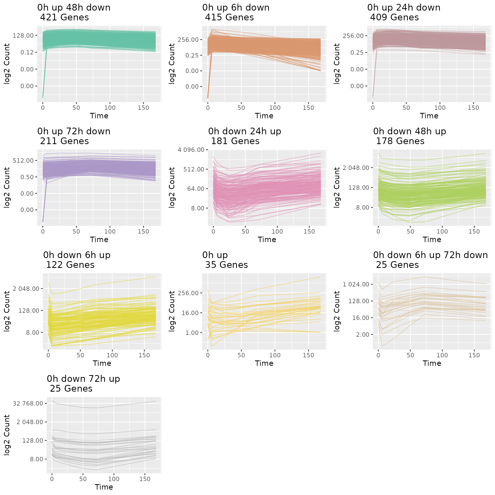

Gene-Trajectory-Analysis.Rmd
library(TrendCatcher)
demo.master.list.path<-system.file("extdata", "BrainMasterList.rda", package = "TrendCatcher")
load(demo.master.list.path)The demo master table is using gene ENSEMBL as row name. For input CSV file using ENSEMBL ID as row name. TrendCatcher provides some easy manipulation functions to add gene SYMBOL column into the master.table.
### In case bioMart has connection issue, you can load from example data
#gene.symbol.df<-get_GeneEnsembl2Symbol(ensemble.arr = master.list$master.table$Gene)
#master.table.new<-cbind(master.list$master.table, gene.symbol.df[match(master.list$master.table$Gene, gene.symbol.df$Gene), c("Symbol", "description")])
#master.list$master.table<-master.table.new
#head(master.list$master.table)
demo.master.list.path<-system.file("extdata", "BrainMasterList_Symbol.rda", package = "TrendCatcher")
load(demo.master.list.path)
head(master.list$master.table)## Gene pattern start.idx end.idx dynTime dynSign start.t
## 1330 ENSMUSG00000025283 up_down_ 1_4_ 4_6_ 6_24_48_72_ +_+_+_+_ 0_48_
## 1857 ENSMUSG00000028967 up_down_ 1_2_ 2_6_ 6_24_48_ +_+_+_ 0_6_
## 2886 ENSMUSG00000039236 up_down_ 1_2_ 2_6_ 6_24_ +_+_ 0_6_
## 4179 ENSMUSG00000078920 up_down_ 1_2_ 2_6_ 6_24_48_ +_+_+_ 0_6_
## 4437 ENSMUSG00000105987 up_down_ 1_4_ 4_6_ 6_24_48_72_ +_+_+_+_ 0_48_
## 973 ENSMUSG00000022221 up_down_ 1_3_ 3_6_ 6_24_48_72_ +_+_+_+_ 0_24_
## end.t pattern_str dyn.p.val dyn.p.val.adj Symbol
## 1330 48_168_ 0h_up_48h_down_168h 1.11e-16 4.615657e-13 Sat1
## 1857 6_168_ 0h_up_6h_down_168h 1.11e-16 4.615657e-13 Errfi1
## 2886 6_168_ 0h_up_6h_down_168h 1.11e-16 4.615657e-13 Isg20
## 4179 6_168_ 0h_up_6h_down_168h 1.11e-16 4.615657e-13 Ifi47
## 4437 48_168_ 0h_up_48h_down_168h 2.22e-16 7.385052e-13 AI506816
## 973 24_168_ 0h_up_24h_down_168h 3.33e-16 9.231315e-13 Ripk3
## description
## 1330 spermidine/spermine N1-acetyl transferase 1 [Source:MGI Symbol;Acc:MGI:98233]
## 1857 ERBB receptor feedback inhibitor 1 [Source:MGI Symbol;Acc:MGI:1921405]
## 2886 interferon-stimulated protein [Source:MGI Symbol;Acc:MGI:1928895]
## 4179 interferon gamma inducible protein 47 [Source:MGI Symbol;Acc:MGI:99448]
## 4437 expressed sequence AI506816 [Source:MGI Symbol;Acc:MGI:2140929]
## 973 receptor-interacting serine-threonine kinase 3 [Source:MGI Symbol;Acc:MGI:2154952]If the input CSV file using GENE SYMBOL as row name. Just simply add Symbol column to the master.table. Because some function requires the Symbol column.
### ONLY use this command if CSV file is using GENE SYMBOL as row name!!!!!!
#master.list$master.table$Symbol<-master.list$master.table$Gene To look at each single gene trajectory and fitted count. We use function draw_GeneTraj.
gene.symbol.arr<-unique(master.list$master.table$Symbol)[1:6]
p<-draw_GeneTraj(master.list = master.list, gene.symbol.arr = gene.symbol.arr, ncol = 3, nrow = 2)
p #### 5. Plot Gene Trajectories grouped by their sub-type trajectory pattern.
draw_TrajClusterGrid(master.list = master.list, min.traj.n = 10)
Use hierarchical pie chart to visualize gene trajectory master-pattern and sub-pattern composition. This is useful when comparing two or more projects.
#par(mar=c(1,1,1,1))
#draw_TrajClusterPie(master.list = master.list,inner.radius = 0.7, cex.out = 1, cex.in = 1, fig.title = "Hierarchical Pie Chart")